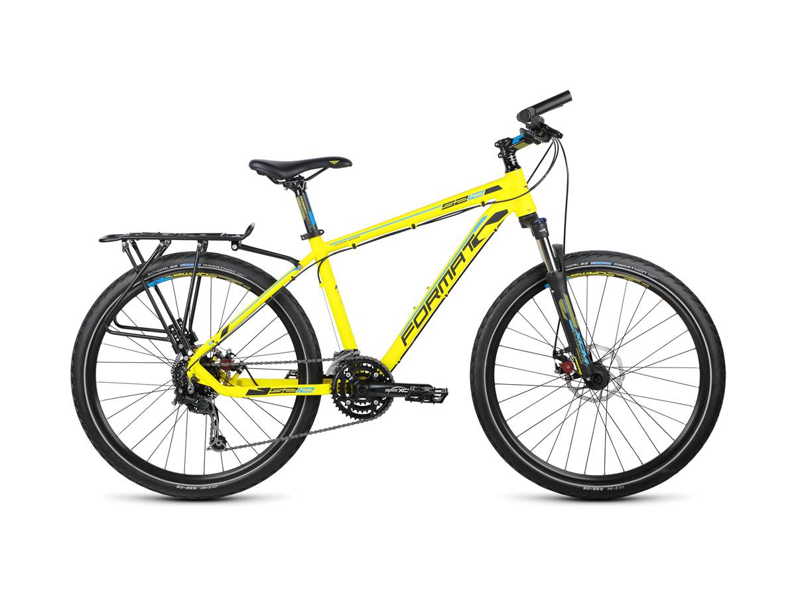
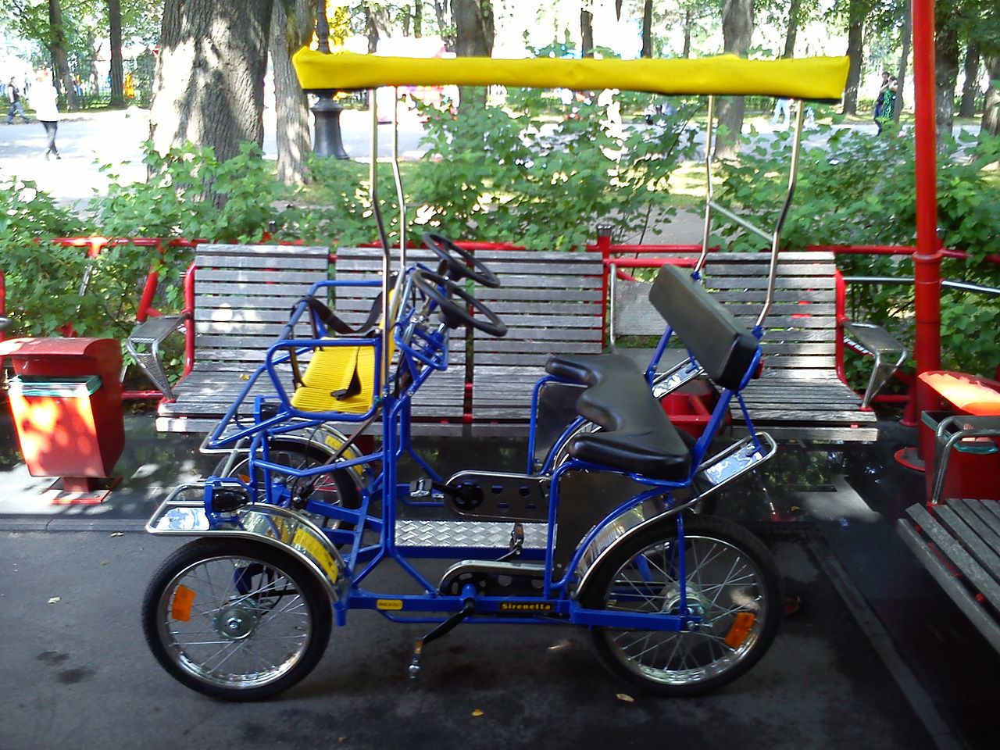

велосипед, веломобиль (далее — велосипед) — транспортное средство, за исключением инвалидных колясок, приводимое в движение мускульной силой человека (людей), находящегося на (в) нем;

Велосипед. Фото с сайта motovelo.by

Веломобиль. Фото с сайта wikipedia.org